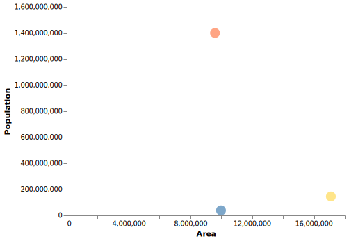
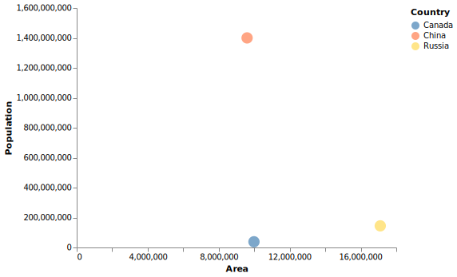

Transcript: There are many different data visualization strategies so which one should we choose when visualizing our data?
When learning about data visualization, it is helpful to distinguish between the following two approaches to visualization:
Transcript: There are a plethora of visualization packages in Python.
This rich selection can be beneficial but it is also confusing, especially when starting out and trying to decide which package to choose.
When learning about data visualization, it is helpful to distinguish between plotting packages that follow either an imperative or a declarative visualization philosophy.
Transcript: Imperative (or low level) plotting packages focus on plot construction details such as how to implement the visualization in terms of for-loops, low-level drawing commands, etc.
This approach gives us minute control over what is plotted, but it becomes quite laborious when we need to plot larger dataframes, or create more complex visualizations.
| Country | Area | Population |
|---|---|---|
| Russia | 17098246 | 144386830 |
| Canada | 9984670 | 38008005 |
| China | 9596961 | 1400050000 |
Transcript: In the example in the next slide, we will plot the area and the population for the three largest countries in the world to see how they compare. This is the table we are plotting.
# Pseudocode
colors = ['blue', 'red', 'yellow']
plot = create_plot()
for row_number, row_data in enumerate(dataframe):
plot.add_point(x=row_data['Area'], y=row_data['Population'], color=colors[row_number])
Transcript: Humans are not good at detecting patterns in raw numbers, and we don’t have good intuition about how different distributions of data can contribute to identical statistical summaries.
But guess what we excel at? Detecting visual patterns!
It is immediately clear to us how these sets of numbers differ once they are shown as graphical elements instead of textual objects.
This is one of the main reasons why data visualization is such a powerful tool for data exploration and communication.
In our example here, we would come to widely different conclusions about the behaviour of the data for the four different data sets.
Sets A and C are roughly linearly increasing at similar rates, whereas set B reaches a plateau and starts to drop, and set D has a constant X-value for all numbers except one big outlier.
Transcript: Declarative (or high level) plotting packages declare links between dataframe columns and visual channels, such as the x-axis, y-axis, colour, etc.
This means that you can provide a high-level specification of what you want the visualization to include, and the plot details are handled automatically.
In summary, declarative visualization tools let you think about data and relationships, while imperative visualization tools focus on plot construction details.

Transcript: The visualization on this page is an example of what a plot could look like when run with real code similar to our pseudocode.
You will notice that this time the plot also includes a legend without us having to create it explicitly, which is a common convenience in declarative plotting packages.
# Pseudocode
chart(dataframe).add_points().encode_columns(x='Area', y='Population', color='Country')`.Transcript: The declarative plotting concept can be implemented in different ways.
In the previous slide, we had a dedicated function for creating the pointplot, and there would be a separate function for creating a lineplot, barplot, etc.
With this approach, it is often not easy to combine plots together, unless there is a specific function for that purpose and the three bullets points on this slide are all executed by this single function.
Another way to use declarative plotting is via a visualization grammar. Generally, a grammar governs how individual parts come together to compose more complex constructs. For example, a linguistic grammar decides how words and phrases can be combined into coherent sentences. A data visualization grammar determines how to combine individual parts of the plotting syntax to create complete visualization. In the example on this slide, you can see that the three bullet points are now broken down into one main function to create the chart linked to the data, and then we build upon this by adding the graphical elements (add_points()) and the encoding of the columns to properties of this chart (encode_columns()). By combining these three grammatical components in different ways, we can build a wide range of visualizations, without memorizing a unique function for each plot type.
Thanks to this grammatical visualization approach, we also only require minimal changes to our code to change the type of plot.
Transcript: Now that we know the basic concepts of how data can be visualized, let’s select a Python package and get coding!
In this image, you can see the most commonly used Python plotting packages. There are many more, but these are the ones you are the most likely to hear about, so it is good to know that they exist.
The text to the left in the image is a legend to explain the colours used for the different Python packages (blue for high level, declarative packages and orange for low-level, imperative packages).
As you can see there are several high and low-level language, so how do we chose?
In this course we will use Altair, because it is a powerful declarative visualization tool with a clear and consistent grammar that also allows us to add interactive components to our plots, such as tooltips and selections.
We have also included some of the most common visualization packages for the web which are built-in Javascript and coloured in white.
The reason we mention these is that the Altair library is a little bit of Python code connected to an already existing powerful JavaScript package called VegaLite, which in turns builds on D3, the most dominant visualization package on the web today.
By leveraging these well-established JavaScript visualization packages Altair can create plots that work natively on the web and includes interactive features without reinventing the wheel.
Since Altair and VegaLite are relatively new visualization libraries, they don’t yet support every single plot type out there, but they more than make up for it with their ease of use and support for powerful interactive visualizations, as we will see later.
Name Miles_per_Gallon Cylinders Displacement Horsepower Weight_in_lbs Acceleration Year Origin
0 chevrolet chevelle malibu 18.0 8 307.0 130.0 3504 12.0 1970-01-01 USA
1 buick skylark 320 15.0 8 350.0 165.0 3693 11.5 1970-01-01 USA
2 plymouth satellite 18.0 8 318.0 150.0 3436 11.0 1970-01-01 USA
3 amc rebel sst 16.0 8 304.0 150.0 3433 12.0 1970-01-01 USA
4 ford torino 17.0 8 302.0 140.0 3449 10.5 1970-01-01 USA
.. ... ... ... ... ... ... ... ... ...
401 ford mustang gl 27.0 4 140.0 86.0 2790 15.6 1982-01-01 USA
402 vw pickup 44.0 4 97.0 52.0 2130 24.6 1982-01-01 Europe
403 dodge rampage 32.0 4 135.0 84.0 2295 11.6 1982-01-01 USA
404 ford ranger 28.0 4 120.0 79.0 2625 18.6 1982-01-01 USA
405 chevy s-10 31.0 4 119.0 82.0 2720 19.4 1982-01-01 USA
[406 rows x 9 columns]Transcript: Before we start visualizing data, we need to select a dataset and often also a question we want to answer. Altair works with dataframes in the “tidy” format (which we talked about in the Programming in Python for Data Science course), which means that they should consist of rows with one observation each and a set of named data columns with one feature each (you might also have heard these called fields or variables, but we will stick to columns for clarity). In this course, we will often use data from the vega-datasets package, which has many plot-friendly practice datasets available as Pandas dataframes and can be loaded as demonstrated in this slide. We can use these datasets by importing thedatamodule from thevega_datasetspackages as in this slide. Here, our data contains the name of different cars and some attributes relating to each car. There are many interesting questions we could ask from this data set! For our first plot, let’s explore the relationship between how heavy a car is (theWeight_in_lbscolumn) and how good gas mileage it has (theMiles_per_galloncolumn). Before starting to code the visualization, take a few seconds and think about what you would expect the relationship between these two columns to look like when you plot it.
Transcript: Here we assigned a shorter name (alt) to the Altair library when importing it to save us some typing later. The Altair syntax is similar to the grammar of graphics pseudocode we saw a few slides ago. The fundamental object in Altair is theChart, which takes a data frame as a single argument, e.g.alt.Chart(cars).
After the chart object has been created, we can specify how the graphical element should look that we use to visualize the data. This is called a graphical mark in Altair, and in this slide, we have usedmark_point()to show the data as points.
Since we have not specified which columns should be used for the x and y axes, we appear to only see one point in this plot since all the data is plotted on top of each other in the same location.
To the right of the chart, there is a button with three dots on it. Don’t worry about it for now, we will explain what this is for at the end of the chapter.
Mapping a dataframe column to the x-scale
Transcript: To visually separate the points, we can encode columns in the dataframe as visual channels, such as the axes or colours of the plot.
Here, we encode the columnMiles_per_Gallonas the x-axis. For Pandas data frames, Altair automatically determines an appropriate data type for the mapped column, which in this case is quantitative (or numerical) and shows the numbers under the axis.
You can see that there are several short black lines spread out evenly on the x-axis. These are called axis ticks and help us see where the values of this dataframe column lie along the axis.
The faint gray lines are called grid lines and extend the locations of the axis ticks so that it is easy to compare their position to the points.
This is particularly useful when the points might be further away from the axis ticks, such as in the next slide.
Transcript: By spreading out the data along both the x and y-axis, we can answer our initial question about the relationship between car weight and gas mileage. as it appears that the heavier cars are the ones that have the poorest mileage.
Although we might have expected this to be the case, visualizing all the data points also provides information on the nature of the relationship between weight and mileage.
It appears that the x-y points don’t simply follow a straight line, but rather a curved line that where the mileage drop quickly when moving away from the lightest cars, but then decreases more slowly throughout the remainder of the data.
This rich, easily interpretable display of information is one of the main advantages of visualizing data and later in the course, we will talk more about the different type of relationships, such as linear, exponential, etc.
Transcript: Is there a relationship between horsepower and car weight, or fuel-efficiency?
To enrich this display of information further, we can colour the points according to a column in the dataframe. When we encode a column as the colour channel Altair will automatically figure out an appropriate colour scale to use, depending on whether the data is numerical, categorical, etc. Here we have indicated that we want to colour the points according to the car’s horsepower, which indicated how powerful its engine is.
We can see that the heavier cars have more powerful engines, than the lighter ones, but when using colour for a numerical comparison like this, makes it is harder to tell whether the relationship follows a straight line or is of another nature, so this encoding is mostly useful as an approximate indication of the horsepower.
We can also observe a relationship between the horsepower of a vehicle and the fuel efficiency. It appears that cars with greater horsepower (the points with a darker shade of blue) are less efficient with their fuel since miles per Gallon is much lower.
In the next module, we will learn more in detail about which encodings are most suitable for different comparisons.
Transcript: In the previous slide, a continuous, gradually increasing colour scale was used to visualize the gradual increase in the numerical column Horsepower. In this slide, we instead chose to colour the points per the categorical column Origin (where the car was made).
As you can see, Altair detects that this column contains categorical data (with the help of pandas) and picks a different colour scale to facilitate distinction between the categories. As in the previous slide,
Altair automatically adds a helpful legend, and we can see that the heavier, more powerful cars are primarily manufactured in the US, while the lighter more fuel-efficient ones are manufactured in Europe and Japan (remember that this is true for this particular dataset, and not necessarily all cars).
alt.Chart(cars).mark_point().encode(
x='Weight_in_lbs',
y='Miles_per_Gallon',
color='Origin',
shape='Origin') Transcript: Although Altair’s colour scales are designed to be effective and easy to interpret, we can make the categories in our plot even more distinct by encoding the same categorical column as both colour and shape.
This also makes visualizations much easier to interpret and understand for anyone with visual colour deficiency (about 10% of the population). We will talk more in-depth about colour theory in a later module.
alt.Chart(cars).mark_point().encode(
x='Weight_in_lbs',
y='Miles_per_Gallon',
color='Origin',
shape='Origin',
size='Horsepower') Transcript: Sometimes a visualization tries to do too much. In this example, we have added the size channel to indicate the engine power.
Although Altair elegantly handles the dual legends, it is difficult for us to discern useful information from this plot. If you go back to the plot where we encoded weight in the colour channel, you can see that the plot is much clearer.
Later we will learn more about how to efficiently load a visualization with an appropriate amount of information, and what the research indicates regarding which visual channels are the most efficient for communicating information visually.
alt.Chart(cars).mark_point().encode(
x='Weight_in_lbs',
y='Miles_per_Gallon',
color='Origin',
shape='Origin',
size='Horsepower') Transcript: This is the same visualization as from the last slide, and we will just use it as an example.
The button to the right of the chart with three dots on it is called the “action button”. and clicking it will bring up a menu.
The first two items in ’s menu can be used to save the chart, either in an image-based PNG-format or a text-based SVG-format.
We will also be learning about programmatic ways to save our charts later in the course.
The last three menu items relate to the library VegaLite, which is what we mentioned Altair is built upon, but we will not be using these in this course.